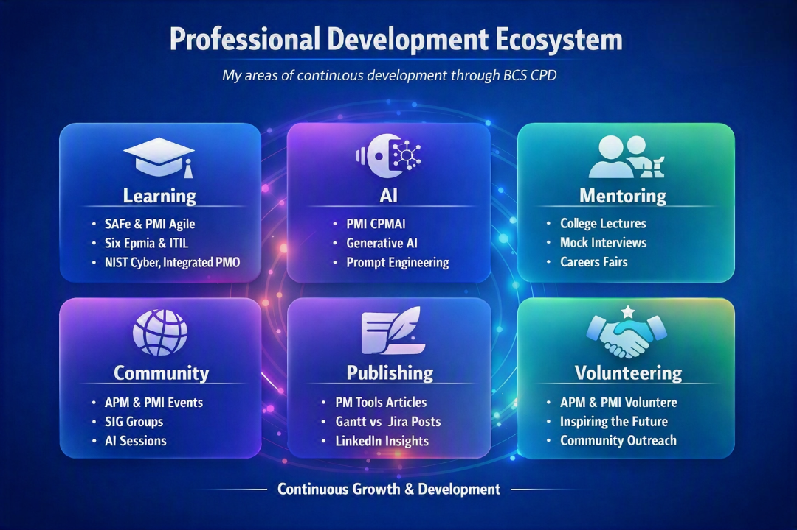

Life cycles
The ability to structure and organise change initiatives through appropriate life cycle choices that transform ideas into reality in an orderly and efficient manner.

A consolidated view of ongoing CPD activity and alignment to the APM Competence Framework (3rd edition), demonstrating sustained professional growth and reflective practice.
Hours needed before 30 Sep 2026
This page provides a comprehensive view of continuing professional development activities and competence alignment with the APM Competence Framework (3rd edition). It brings together a detailed CPD activity log, reflective themes, and a structured summary of key competence areas.
The APM Competence Framework defines 29 competences across life cycles, governance, people, planning and delivery. Each competence is expressed in terms of knowledge and application, providing a benchmark for effective project, programme and portfolio management.
The ability to structure and organise change initiatives through appropriate life cycle choices that transform ideas into reality in an orderly and efficient manner.
The ability to establish and maintain governance structures that define control of deployment and align with organisational practice to realise value.
The ability to balance environmental, social, economic and administrative considerations so that outputs, outcomes and benefits remain sustainable over their life cycles.
The ability to enable financial resource for delivery and to plan and control finances as part of the organisation’s overall financial management to optimise the business case.
The ability to prepare, gain approval of, refine and update business cases that justify initiation, investment and continuation of change initiatives in terms of benefits, costs and risks.
The ability to set up portfolios that group and prioritise change initiatives to deliver strategic objectives while balancing business-as-usual and capacity to deliver.
The ability to secure the provision of resources by choosing strategies that obtain best value from supply chains and external suppliers.
The ability to manage progression through the life cycle by planning and conducting reviews that assess status, viability and performance.
The ability to provide confidence to governance that the change initiative is on track to deliver objectives and intended value through objective, independent checks.
The ability to assess organisational maturity and improve competences, investing in people and knowledge to enhance predictability and performance.
The ability to manage the integration of outputs into business-as-usual so that new capabilities enable the intended value.
The ability to identify and agree benefits and determine how they will be measured, monitored and managed until they are realised.
The ability to work with people internally and externally to build support, maintain commitment and ensure timely, relevant communication.
The ability to identify, address and resolve differences between individuals and groups so that conflict supports learning rather than harms delivery.
The ability to empower and inspire others by providing vision, direction, feedback and support so people can deliver successful change initiatives.
The ability to select, develop and manage individuals to create and sustain teams that achieve objectives that cannot be realised individually.
The ability to build and maintain an inclusive environment that embraces a diverse culture and treats people fairly.
The ability to embody, promote and maintain a trusted profession while navigating cultural, legal and regulatory environments.
The ability to prepare and maintain clear, measurable definitions of requirements that satisfy identified needs.
The ability to determine optimal solutions that satisfy agreed requirements by exploring and refining options.
The ability to ensure that outputs and processes meet stakeholder requirements and are fit for purpose.
The ability to bring together scope, time, cost, risk, resources and benefits into an integrated project management plan.
The ability to develop and maintain schedules that show when work is planned, considering dependencies and resources.
The ability to acquire and deploy internal and external resources, using scarce resources in an optimal way.
The ability to plan resource needs in line with strategic direction so utilisation is maintained at an appropriate level.
The ability to estimate costs, set budgets and manage actual and forecast costs against those budgets.
The ability to monitor and manage supplier performance through proactive, tailored contract management from initiation to closure.
The ability to identify, assess and respond to risks and issues so threats are minimised and opportunities are maximised.
The ability to manage variations and change requests in a controlled way, ensuring impacts are assessed and decisions are documented.
Summary: You demonstrate strong capability in selecting and applying appropriate life cycle models, adapting based on uncertainty, risk and organisational maturity.
The ability to structure and organise change initiatives.
Life cycles are a framework comprising a series of distinct stages required to transform an idea or concept into reality in an orderly and efficient manner. Recognised life cycles include linear, iterative and hybrid approaches.
Summary: Governance is one of your strongest areas. You excel at establishing clear authority, accountability and decision‑making structures.
The ability to establish and maintain governance structures that define control of deployment and align with organisational practice.
Summary: You have a solid working knowledge of sustainability principles and how they influence project outcomes.
The ability to balance environmental, social, economic and administrative considerations that impact a change initiative.
Summary: You demonstrate strong financial planning and control skills, ensuring alignment with organisational financial systems.
The ability to enable financial resource for delivery and to plan and control finances as part of the organisation’s overall financial management.
Summary: You can confidently prepare, justify and maintain business cases, revisiting them as conditions evolve.
The ability to prepare, gain approval of, refine and update business cases that justify initiation and continuation of change initiatives.
Summary: You understand how to align change initiatives with strategic objectives and organisational capacity.
The ability to set up portfolios to ensure efficient delivery of strategic objectives.
Summary: You have a working understanding of procurement strategies and supplier engagement.
The ability to secure the provision of resources by choosing strategies for obtaining best value from supply chains.
Summary: You can effectively plan and conduct reviews to assess progress, viability and performance.
The ability to manage progression through the life cycle of the change initiative.
Summary: You understand assurance principles and can support independent checks that ensure value delivery.
The ability to provide confidence to governance that the change initiative is on track to deliver objectives and intended value.
Summary: You understand organisational maturity and how to improve capability and predictability.
The ability to assess organisational maturity and improve competences within an organisation.
Summary: You understand how to integrate outputs into BAU and support organisational change.
The ability to manage the integration of outputs into business‑as‑usual so that new capabilities enable intended value.
Summary: You have awareness of benefits identification, measurement and tracking.
The ability to identify and agree benefits and determine how they will be measured, monitored and managed until realised.
Summary: You can identify, analyse and engage stakeholders effectively, building commitment and alignment.
The ability to work with people internally and externally to build support and ensure timely, relevant communication.
Summary: You can recognise, address and resolve conflict constructively, promoting healthy challenge.
The ability to identify, address and resolve differences between individuals and groups.
Summary: You can lead teams with clarity, direction and support, adapting leadership style to context.
The ability to empower and inspire others by providing vision, direction, feedback and support.
Summary: You can build, motivate and coordinate teams effectively, aligning people to shared goals.
The ability to select, develop and manage individuals to create and sustain teams.
Summary: You recognise the importance of inclusive environments and fair treatment.
The ability to build and maintain an inclusive environment that embraces a diverse culture.
Summary: You understand the importance of ethical behaviour, legal compliance and professional standards.
The ability to embody, promote and maintain a trusted profession while navigating cultural, legal and regulatory environments.
Summary: You can capture, assess and justify stakeholder needs effectively.
The ability to prepare and maintain definitions of the requirements of change initiatives.
Summary: You have awareness of how to explore solution options and clarify the problem to be solved.
The ability to determine the optimal solution to satisfy agreed requirements.
Summary: You ensure outputs meet defined requirements and stakeholder expectations.
The ability to ensure that outputs are delivered in accordance with requirements.
Summary: You develop integrated plans that bring together scope, schedule, cost, risk, resources and benefits.
The ability to take forward the definition of outputs into detailed planning incorporating multiple areas into the integrated project management plan.
Summary: You demonstrate strong capability in developing and maintaining schedules.
The ability to undertake time‑based planning with an emphasis on activities and resources.
Summary: You identify, acquire and deploy resources effectively.
The ability to acquire and deploy internal and external resources.
Summary: You forecast future resource needs based on organisational strategy.
The ability to plan resource needs in line with strategic direction to maintain optimal utilisation.
Summary: You excel in cost estimation, budgeting and financial control.
The ability to develop and agree budgets, and manage actual and forecast costs against them.
Summary: You manage supplier performance and maintain effective commercial relationships.
The ability to monitor and manage supplier performance throughout the contract lifecycle.
Summary: You demonstrate expert capability in identifying, assessing and responding to risks and issues.
The ability to identify, assess and respond appropriately to risks and issues.
Summary: You excel at managing scope changes in a controlled and transparent way.
The ability to manage variations and change requests in a controlled way.
–
–
–
–
–
–
A consolidated view of CPD progress, activity distribution and reflections.
A visual summary of my completed, remaining and projected CPD hours.
Automatically generated from my CPD log.
Tap to expand CPD log and reflections.
My CPD activities, presented as clean, modern cards.
Automatically generated insights based on my reflective statements and activity patterns.
My professional development is maintained across multiple professional bodies and learning platforms. In addition to my APM CPD activity, my BCS CPD record captures ongoing learning, professional development, mentoring, community contribution, volunteering and knowledge sharing.
View BCS CPD ReportExamples of professional development activity recorded through my BCS CPD record.

Selected examples demonstrating the practical application of project, programme and portfolio management competences across complex transformation, technology and organisational change environments.
Led a major cyber security uplift programme, coordinating governance, risk management and assurance activities across a complex and highly regulated environment.
Led a major cyber security uplift programme within a highly regulated and complex enterprise environment, coordinating governance, risk, assurance and delivery across multiple technology and business stakeholders. The programme required the organisation to strengthen its security posture while maintaining operational continuity and aligning delivery with recognised security frameworks and regulatory expectations. ⚠️ The Challenge The organisation needed to improve cyber resilience, strengthen governance and assurance, and address security risks across a complex technology estate without disrupting critical services. 🎯 My Mandate I provided programme leadership across governance, risk, assurance, planning and delivery, creating the structure required to coordinate multiple workstreams and maintain executive visibility of security outcomes. 🛡️ 1. Security Transformation Coordinated a broad cyber uplift covering security capabilities, risk reduction, resilience and control improvement, aligning technical delivery with organisational security objectives. 📘 2. Governance & Assurance Established structured governance, risk and assurance mechanisms to provide transparent oversight of programme progress, dependencies, risks and decisions. Delivery was aligned with recognised frameworks including NIST CSF and relevant security and regulatory requirements. 🤝 3. Stakeholder Leadership Coordinated technical teams, security specialists, business stakeholders and senior leadership, translating complex cyber risks into clear programme priorities, decisions and measurable delivery outcomes.
A presentation and supporting material demonstrating the approach taken to cyber security transformation, programme governance, risk management and delivery assurance.
Watch presentationSupporting presentation material describing the programme context, transformation approach, governance structure and key delivery outcomes.
View presentationDetailed supporting evidence describing the programme challenge, delivery approach, governance, risk management and outcomes.
View supporting documentLed large-scale digital transformation initiatives within NHS England, coordinating complex technology change, stakeholder engagement and programme delivery across a highly regulated healthcare environment.
Led a multi‑trust NHS England digital transformation programme focused on modernising clinical workflows, improving data interoperability and replacing fragmented legacy systems with secure, cloud‑aligned digital platforms. Operating as Senior Programme Manager, I coordinated delivery across clinical, operational, technical and supplier teams, ensuring alignment with national standards, cyber‑security requirements and patient‑safety governance. The programme introduced new digital capabilities including electronic triage, integrated care‑record access, automated reporting and improved identity and access management. I oversaw programme governance, risk management, stakeholder engagement and delivery assurance, ensuring safe transition without disruption to critical services. The transformation delivered measurable improvements in operational efficiency, clinical safety and patient experience, while strengthening digital maturity across participating trusts and enabling future innovation.
Led a large-scale Windows device migration programme, coordinating the transition of approximately 126,000 devices while managing technology, operational and stakeholder dependencies.
Led a large-scale enterprise Windows device migration involving approximately 126,000 devices, coordinating technology, operational, deployment and stakeholder dependencies across a complex user estate. The programme required industrialised deployment at scale while maintaining business continuity, managing user impact and coordinating multiple technical and operational teams. ⚠️ The Challenge Migrating a 126,000-device estate introduced significant challenges across deployment readiness, application compatibility, infrastructure, security, user communications, support and operational continuity. 🎯 My Mandate I provided programme leadership and integrated planning across the migration, bringing together technical delivery, operational readiness, stakeholder management, risk control and deployment governance. 💻 1. Industrialised Migration Coordinated the migration of approximately 126,000 devices using structured deployment waves, readiness controls and dependency management to enable repeatable delivery at enterprise scale. 🔄 2. Technology & Operational Integration Coordinated dependencies across endpoint management, infrastructure, applications, security, identity, service management and user support to ensure the technology transition was operationally sustainable. 🤝 3. Stakeholder & Risk Management Maintained programme visibility across technical teams, business stakeholders and operational functions, using structured governance, risk management and planning to manage the complexity of a highly distributed estate.
Presentations, documents, videos and other supporting evidence to be added.
Led cloud transformation and modernisation initiatives across complex technology environments, supporting cloud adoption, infrastructure transformation and improved operational outcomes.
Led cloud transformation and modernisation initiatives across complex enterprise technology environments, supporting adoption of Azure and AWS while aligning technology change with operational, financial and business objectives. The transformation required more than technical migration. It involved establishing the governance, planning, operating model and stakeholder alignment necessary to transition towards sustainable cloud-enabled services. ⚠️ The Challenge The organisation needed to modernise its technology estate and increase cloud adoption while controlling operational costs, managing migration risk and maintaining service continuity. 🎯 My Mandate I led programme-level coordination across cloud adoption, infrastructure transformation, governance, dependencies, risk and operational readiness, connecting technical delivery with measurable business outcomes. ☁️ 1. Cloud Adoption Supported adoption of Azure and AWS capabilities as part of a broader technology modernisation strategy, coordinating migration priorities, dependencies and delivery planning. 📊 2. Cost & Operational Optimisation Connected cloud transformation with operational improvement and financial management, helping identify opportunities to rationalise services, improve efficiency and reduce the cost of operating the technology estate. 🔐 3. Secure & Governed Transformation Ensured cloud transformation was delivered within appropriate governance, security, risk and operational controls, balancing the pace of modernisation with enterprise assurance requirements.
Presentations, documents, videos and other supporting evidence to be added.
“I fix failing delivery environments.”
Led PMO transformation and turnaround activity, improving governance, delivery confidence, stakeholder visibility and overall programme performance across a complex portfolio.
A struggling PMO facing SLA failures, low morale, and declining client trust was transformed into a stable, high‑performing service during a critical contract renewal phase. When a managed service enters a contract renewal phase, performance becomes a commercial differentiator—not just an operational concern. ⚠️ The Challenge The PMO was experiencing systemic issues including SLA failures, low morale, poor delivery outcomes, and a breakdown in client collaboration. 🎯 My Mandate My role was to take operational control, stabilise delivery, rebuild culture, restore trust, and return the service to profitability. 🧩 1. Structured Recovery A hybrid Agile + Integrated Planning approach prioritised immediate recovery while aligning short‑term fixes with long‑term strategy. 📘 2. Governance Reset Using Six Sigma, continuous improvement, lessons learned, and ISO 27001 alignment, governance was redesigned to enable—not restrict—delivery. 🤝 3. Cultural Transformation Structured interviews and open communication rebuilt trust and restored a “one‑team” ethos.
"I create the control system that makes complex delivery predictable.”
Established and led programme governance frameworks, providing structured oversight, decision-making, assurance and stakeholder transparency across complex transformation programmes.
A PMO without structure becomes reactive, focusing on reporting rather than results. A defined operating model transforms governance into a strategic enabler—aligning governance, planning, people, and value to deliver measurable outcomes. Using the PMO Operating Model Wheel, programme governance was strengthened through confidence, consistency, and control. This included disciplined decision-making, transparent reporting, and assurance mechanisms that elevated stakeholder trust and improved delivery predictability. The governance framework became a strategic anchor for executive conversations, enabling clearer scope definition, structured oversight, and alignment between strategy and execution.
Drawing on my CPD activity and competence assessment, the following areas are prioritised for focused development over the coming year.
Current capability to target capability — prioritised across the next 12 months.